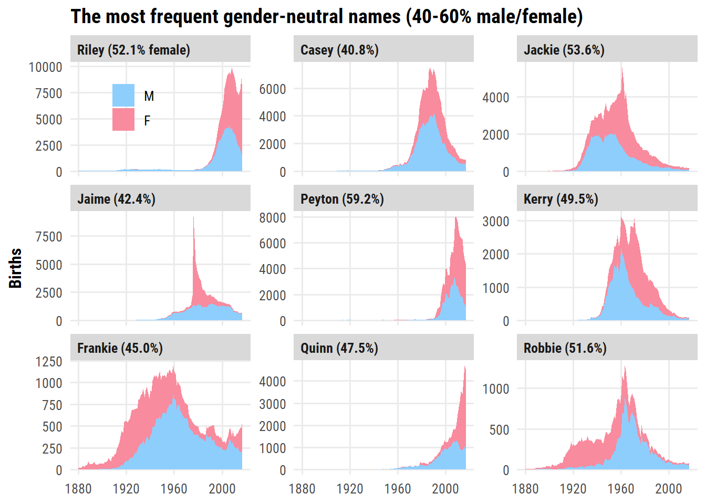

# A tibble: 1,924,665 × 2
prop prop_manual
<dbl> <dbl>
1 0.0724 0.0776
2 0.0267 0.0286
3 0.0205 0.0220
4 0.0199 0.0213
5 0.0179 0.0192
6 0.0162 0.0173
7 0.0151 0.0162
8 0.0145 0.0155
9 0.0135 0.0145
10 0.0132 0.0142
# … with 1,924,655 more rows
# ℹ Use `print(n = ...)` to see more rows
Not quite – my manually calculated prop_manual is slightly higher. It may be due to un-documented names not being counted in the babynames data frame. The applicants data has the number of social security number applications. Is this the denominator?
babynames %>%left_join(tt$applicants, by =c("year", "sex")) %>%mutate(prop_manual = n / n_all) %>%select(prop, prop_manual)
# A tibble: 1,924,665 × 2
prop prop_manual
<dbl> <dbl>
1 0.0724 0.0724
2 0.0267 0.0267
3 0.0205 0.0205
4 0.0199 0.0199
5 0.0179 0.0179
6 0.0162 0.0162
7 0.0151 0.0151
8 0.0145 0.0145
9 0.0135 0.0135
10 0.0132 0.0132
# … with 1,924,655 more rows
# ℹ Use `print(n = ...)` to see more rows
That looks right.
Not much more to do in terms of data exploration or cleaning here. I’ll jump right into the analysis.
Name creativity over the years
The number of unique names by year and sex:
d <- babynames %>%count(year, sex, name ="n_names")d_max <- d %>%group_by(sex) %>%filter(n_names ==max(n_names))d %>%ggplot(aes(x = year, y = n_names, color = sex)) +geom_line(size =1) +geom_linerange(data = d_max,aes(ymin =0, ymax = n_names, xmin = year, xmax = year, color = sex),lty =2, size =1, show.legend =FALSE ) +geom_text(data = d_max,aes(x = year, y =c(16000, 5000), label = year),hjust =0, nudge_x =1, show.legend =FALSE ) +labs(title ="Number of unique names", y =NULL, color =NULL) +scale_color_manual(values = sex_pal) +theme(legend.position =c(0.2, 0.7))
There is an dip in the number of unique names after peaking in 2007 and 2008 – I’m assuming this is related to a decrease in overall births following the financial crisis. If we normalize by the number of births, does this trend still appear?
Creativity for male names peaked around 1900, and is on the rise again. Creativity for female names has been higher than male names since ~1920, and peaked in 2010.
Another way to think about creativity is the proportion of babies being given the most popular names in a given year:
d <- babynames %>%group_by(year, sex) %>%mutate(name_rank =rank(-n)) %>%ungroup() %>%# Try a few different cut-offscrossing(top_x =c(10, 25, 50, 100, 200)) %>%mutate(top_name = name_rank <= top_x) %>%group_by(year, sex, top_x) %>%summarise(p_top =sum(n[top_name]) /sum(n), .groups ="drop") d %>%mutate(top_x =fct_reorder(paste0("Top ", top_x, " names"), top_x)) %>%ggplot(aes(x = year, y = p_top, color = sex)) +geom_line(size =1) +facet_wrap(~ top_x) +scale_color_manual(values = sex_pal) +theme(legend.position =c(0.8, 0.2))
Out of these, I prefer the top 50 visualization:
d %>%filter(top_x ==50) %>%ggplot(aes(x = year, y = p_top, color = sex)) +geom_line(size =1) +scale_y_continuous(NULL, limits =c(0, 1), labels = scales::percent) +scale_color_manual(values = sex_pal) +labs(x =NULL,title =paste0("Baby <span style='color:#8ecefd'>boy</span> and ","<span style='color:#f88b9d'>girl</span> names ","are getting more creative over time"),subtitle ="Proportion of names in the top 50 most common versus year" ) +theme(legend.position ="none", plot.title =element_markdown())
Gender-neutral names
Before getting into gender-neutral names, I’m curious which are the least gender-neutral in this data?
d <- babynames %>%group_by(name, sex) %>%summarise(n =sum(n), .groups ="drop") %>%complete(name, sex, fill =list(n =0)) %>%pivot_wider(names_from = sex, values_from = n) %>%rename(female =`F`, male = M) %>%mutate(total = female + male) %>%arrange(desc(total)) %>%filter(female ==0| male ==0) %>%select(-total) %>%pivot_longer(cols =-name, names_to ="sex", values_to ="count") %>%filter(count >0) %>%mutate(name =fct_reorder(name, count))d %>%group_by(sex) %>%slice_max(count, n =10) %>%ggplot(aes(y = name, x = count, fill = sex)) +geom_col() +facet_wrap(~ sex, nrow =1, scales ="free_y") +scale_fill_manual(values =c("#f88b9d", "#8ecefd")) +labs(y =NULL, x =NULL,title =paste0("Top 10 most common ","<span style='color:#f88b9d'>100% female</span> and ","<span style='color:#8ecefd'>100% male</span> names"),subtitle ="US baby names from 1880 to 2017" ) +theme(legend.position ="none", plot.title =element_markdown(),panel.grid.major.y =element_blank(),strip.background =element_blank(), strip.text =element_blank())
Determining the most popular gender-neutral names is not as straightforward. I’ll include names with 40-60% of males/females (over all years), and order by top 10 frequency:
d <- babynames %>%group_by(name) %>%summarise(n_total =sum(n), p_female =sum(n[sex =="F"]) / n_total)d %>%filter(p_female >0.4, p_female <0.6) %>%slice_max(n_total, n =9) %>%left_join(babynames, by ="name") %>%mutate(name =fct_reorder(name, n_total),name_label =ifelse( n_total ==max(n_total),glue("{name} ({scales::percent(p_female, 0.1)} female)"),glue("{name} ({scales::percent(p_female, 0.1)})") ) %>%fct_reorder(desc(n_total)) ) %>%ggplot(aes(x = year, y = n)) +geom_area(aes(fill = sex)) +facet_wrap(~ name_label, scales ="free_y", nrow =3) +scale_fill_manual(values = sex_pal) +labs(y ="Births", x =NULL, fill =NULL,title ="The most frequent gender-neutral names (40-60% male/female)" ) +theme(legend.position =c(0.1, 0.9))

Next, I’d like to visualize how the number of gender-neutral names changed over time. To do this, I’ll compute the ratio of females to males for each name in a given year (excluding names which have 0 females or 0 males):
d <- babynames %>%group_by(year, name) %>%# Keep only names with both sexesfilter("F"%in% sex, "M"%in% sex) %>%summarise(ratio_female = n[sex =="F"] / n[sex =="M"], .groups ="drop")glimpse(d)
Then I’ll plot each ratio as a point and use the ggpointdensity package to color by the density of points:
d %>%ggplot(aes(x = year, y = ratio_female)) + ggpointdensity::geom_pointdensity(size =3, adjust =1, alpha =0.2,show.legend =FALSE) + dunnr::scale_color_td(palette ="div5", type ="continuous") +scale_y_log10(breaks =10^seq(-2, 2),labels =c("1:100", "1:10", "1:1", "10:1", "100:1")) +labs(x =NULL, y =NULL,title ="The amount of gender-neutral names is increasing",subtitle ="Each point represents the ratio of females:males for a single name in a single year.\nColor indicates the density of points.",caption =paste("data: {babynames} R package","plot: Taylor Dunn", sep =" | ") ) +theme(plot.subtitle =element_text(size =10))
My name
Selfishly, I of course want to explore my name and its different variations.
First, here are the names which start with “Tayl” or “Tail” and have an “r” in them:
The most popular year for male Taylors happens to be the year I was born: 1992. Female Taylors peaked in frequency the next year.
Lastly, a plot of the proportion and number of Taylors by sex over time:
d <- babynames_taylor %>%filter(name =="Taylor", year >=1960) %>%select(year, sex, n) %>%complete(year, sex, fill =list(n =0)) %>%group_by(year) %>%mutate(p_female = n[sex =="F"] /sum(n)) %>%ungroup()p_title <-glue("<span style='color:{sex_pal[1]}'>Male</span> and ","<span style='color:{sex_pal[2]}'>Female</span> Taylors over time",)p1 <- d %>%distinct(year, p_female) %>%ggplot(aes(x = year)) +geom_ribbon(aes(ymin =0, ymax = p_female), fill = sex_pal["F"]) +geom_ribbon(aes(ymin = p_female, ymax =1.0), fill = sex_pal["M"]) +geom_line(aes(y = p_female), color ="white", size =1) +geom_hline(yintercept =0.5, lty =2, color ="white", size =1) +scale_y_continuous(labels = scales::percent,expand =c(0, 0)) +scale_x_continuous(breaks =NULL, expand =c(0, 0)) +labs(x =NULL, y ="Proportion by sex", title = p_title) +theme(plot.title =element_markdown())p2 <- d %>%ggplot(aes(x = year, y = n, fill = sex)) +geom_area() +scale_fill_manual(values = sex_pal) +scale_x_continuous("Year", breaks =seq(1960, 2020, 10), expand =c(0, 0)) +theme(legend.position ="none", panel.grid.major.x =element_blank()) +labs(y ="Number of births")p1 / p2
Reproducibility
Session info
setting value
version R version 4.2.1 (2022-06-23 ucrt)
os Windows 10 x64 (build 19044)
system x86_64, mingw32
ui RTerm
language (EN)
collate English_Canada.utf8
ctype English_Canada.utf8
tz America/Curacao
date 2022-08-31
pandoc 2.18 @ C:/Program Files/RStudio/bin/quarto/bin/tools/ (via rmarkdown)
Git repository
Local: main C:/Users/tdunn/Documents/tdunn-quarto
Remote: main @ origin (https://github.com/taylordunn/tdunn-quarto.git)
Head: [b06aa11] 2022-09-01: Set inline code color
![]()